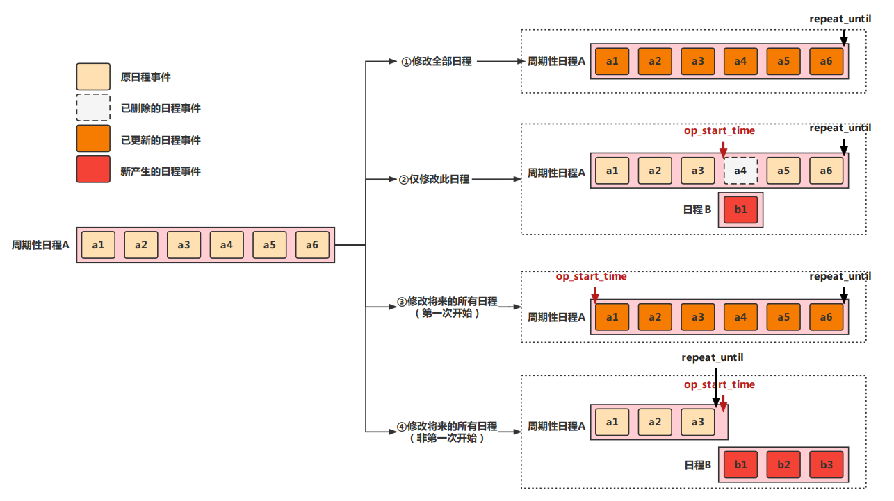

目录
企业微信重复日程（即周期性日程），用户可能只想更新或取消特定周期的日程，因此API接口提供三种修改模式，以满足不同的使用场景（删除和更新类似，后文仅已更新日程作说明）。调用者需配合使用op_mode和op_start_time两个入参字段来按自己想要的方式修改重复日程。
图示不同模式的修改原理：

需要注意的点：
op_mode为“仅修改此日程”或“修改将来的所有日程”，非周期性日程指定会报错90485。op_start_time来指定从哪个周期开始修改。op_start_time需是原日程某个周期的开始时间（Unix时间戳，精确到秒），如果企业微信后台不能匹配到任何周期的开始时间，会报错90482。90484。其它重复性相关的参数也会被认为无效。以学校课程表场景为例：
学校教师通过企业微信日历API为学生添加课程表日历本，并在该日历本上通过日程API添加体育课日程。体育课每周三14:00进行，第一次上课时间是2022年9月7日。那么，创建日程时，指定开始时间start_time为1662530400（2022-09-07 14:00:00），且重复类型指定为每周重复，这样企业微信就会每周三提醒学生上课。
假设第二周体育老师临时有事需要修改课程时间到16:00，那么需要通过更新日程接口，修改第二周当次的日程。
调用更新接口时，指定op_mode=1（仅修改此日程），op_start_time=1663135200（2022-09-14 14:00:00，即第二周周三当次课程的原开始时间），并指定新的start_time=1663142400（2022-09-14 16:00:00），即可达成临时修改课程时间的目的。